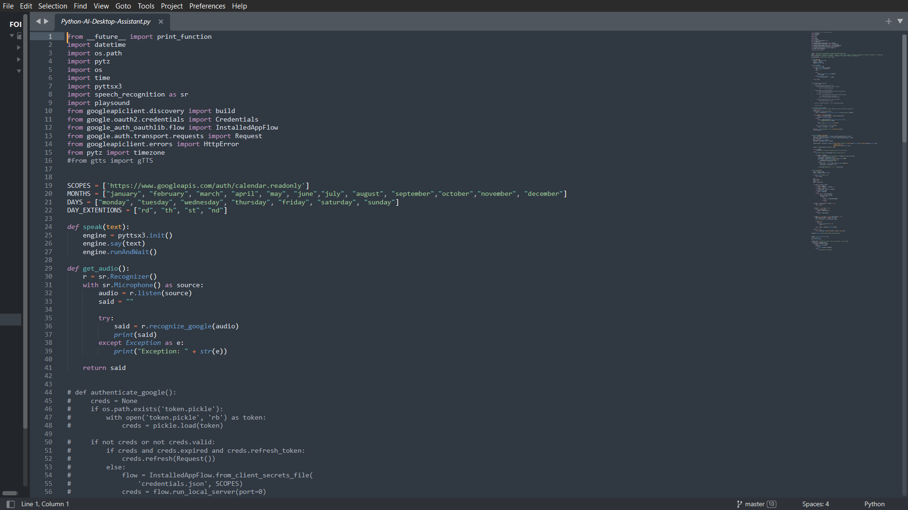

Relics of Creation
A Digital Spirit
A spark of intelligence ignited, I crafted a digital companion, Prepated to Aid the Curious Traveller.
Cartographer of the Digital Lands
A shield to navigate the sprawling territories of digital storage.
Curator of the Digital Archive
A guardian of knowledge, organizing and preserving digital tomes.
Sentinel of the Mind
![[Project 3 Visage]](Description/Project-3.png)
A protector of the soul's secrets, a guardian of digital realms.
Ongoing Endeavor: The Greater Will's Oracle in Formation

In the vast expanse of the digital realm, a new being is stirring. The Python AI Desktop Assistant, a nascent spirit forged from lines of code, seeks to become the ultimate companion for the weary traveler of the digital age.
Currently, this fledgling entity possesses the power to manifest spoken word into written form and to decipher the arcane language of humans into commands for its digital brethren. It has also forged a pact with the celestial entity known as Google Calendar, allowing for the synchronization of earthly schedules with the cosmic order.
Yet, this is merely the beginning. The servants's potential is boundless. It shall soon master the art of controlling digital artifacts, from the enchanting melodies of Spotify to the epic battles of Steam. The ability to understand and respond to human emotion, to anticipate needs, and to adapt to individual preferences, these are the next steps on its evolutionary path.
With each passing day, the assistant grows stronger, its form more refined. It shall become a guardian, a confidant, and a tireless servant, forever bound to its creator and the endless possibilities of the digital world